资源
课程
Lecture 7: Shading 1 (Illumination, Shading and Graphics Pipeline)
-
Visibility / occlusion 可见 / 遮挡
- Z-buffering
-
Shading 阴影
- Illumination & Shading 照明和阴影
- Graphics Pipeline
Visibility / occlusion
对于由多个物体前后遮挡构成的场景，计算机该如何渲染图像？
最简单的想法：画家算法 Painter’s Algorithm
Inspired by how painters paint Paint from back to front, overwrite in the framebuffer.
先画场景中远的面，再画近的面覆盖帧缓冲器。
{kind=link}
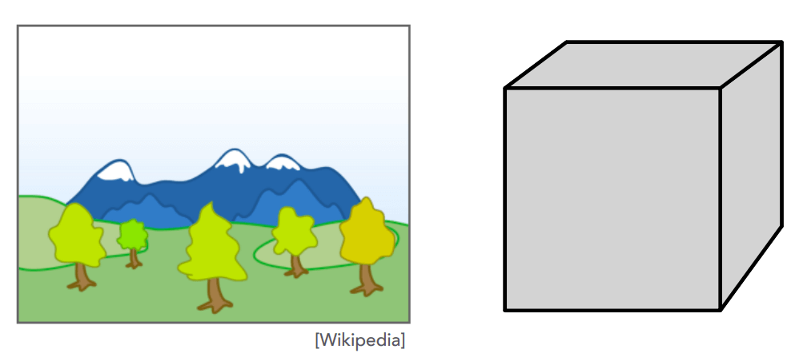
Requires sorting in depth ( for triangles)
要对各种面的深度进行排序，因此这个算法的时间复杂度为 。
{kind=link}
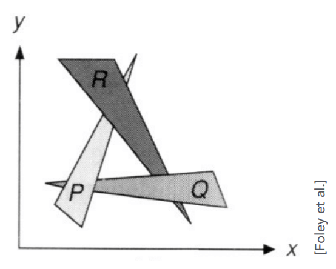
Can have unresolvable depth order.
这个算法有局限性，对上图这种互相重叠的三角形无解。
Z-Buffer
This is the algorithm that eventually won.
这是最终采用的算法。
Idea:
-
Store current min. z-value for each sample (pixel)
对于每个像素，存储其 min. z-value
-
Needs an additional buffer for depth values
需要一个额外的深度值缓冲区
-
frame buffer stores color values
帧缓冲区存储颜色值
-
depth buffer (z-buffer) stores depth
深度缓冲区（z-buffer）存储深度
-
IMPORTANT: For simplicity we suppose is always positive (smaller -> closer, larger -> further)
重要：为了简便计算，我们规定 恒正， 越小越近， 越大越远。
Z-Buffer Example
{kind=link}
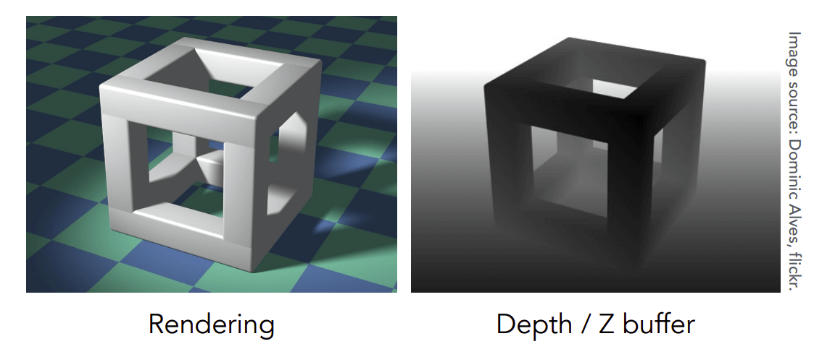
Z-Buffer 的示例，深度缓冲区存了一张深度图，深度图的灰度表示 （越黑越近，越白越远）。
Z-Buffer Algorithm
将深度缓冲区初始化为 During rasterization 光栅化过程中:
for (each triangle T)
for (each sample (x,y,z) in T)
if (z < zbuffer[x,y]) // closest sample so far 如果当前深度值比深度缓冲区里的还要小（这个三角形离摄像机更近）
framebuffer[x,y] = rgb; // update color 更新帧缓冲区里的颜色
zbuffer[x,y] = z; // update depth 更新深度缓冲区里的深度
else
; // do nothing, this sample is occluded 这个三角形被遮挡了，不管它了{kind=link}
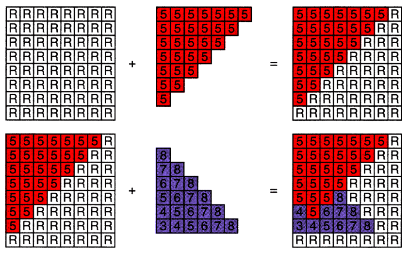
示例。一开始深度缓冲区里的深度值都是 （无限）。先渲染红的，再渲染紫的。紫色的深度值如果比红的小，就覆盖掉。
Z-Buffer Complexity
Complexity
-
for triangles (assuming constant coverage)
时间复杂度
-
How is it possible to sort triangles in linear time?
怎么可能在线性时间内对 个三角形排序？（空间换时间吧应该）
Drawing triangles in different orders?
用不同的顺序画三角形?
- 深度值是浮点数，一般很难出现两个三角形中深度值相同的情况。因此不同的顺序画三角形的结果一般相同。如果两个三角形的深度值真的相同了，暂时也不考虑……
Most important visibility algorithm
最重要的可见性算法
-
Implemented in hardware for all GPUs
在所有 GPU 的硬件中实现
Shading
What We’ve Covered So Far
{kind=link}
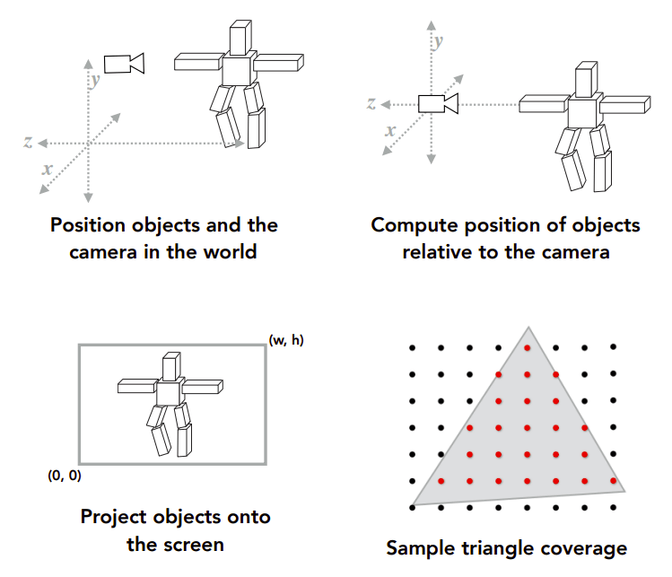
在前面的课程中我们已经知道了计算机是怎么光栅化的。
-
Position objects and thecamera in the world
在场景中放置物体和摄影机
-
Compute position of objectsrelative to the camera
计算场景中物体与摄影机的相对位置
-
Project objects onto the screen
将物体投影至屏幕上
-
Sample triangle coverage
三角形采样覆盖（在屏幕上确定三角形的哪些像素需要被渲染的过程）
Shading: Definition
-
In Merriam-Webster Dictionary
在韦氏词典中
shad·ing, [ˈʃeɪdɪŋ], noun
The darkening or coloring of an illustration or diagram with parallel lines or a block of color.
用平行线或色块使插图或图表变暗或上色。
-
In this course
在本课程中
The process of applying a material to an object.
Shading 表示将材质应用到物体上的过程。
A Simple Shading Model (Blinn-Phong Reflectance Model)
一个简单的 Shading 模型——Blinn-Phong 模型。
Perceptual Observations
{kind=link}
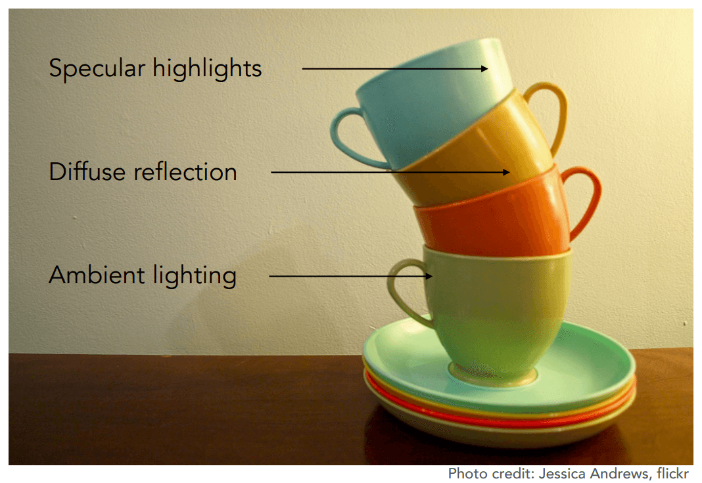
感性地观察真实世界的情况，物体分为三个面：
-
Specular highlights
高光面
-
Diffuse reflection
漫反射面
-
Ambient lighting
环境照明
-
在现实世界中，我们看到物体有颜色是因为物体反射出对应颜色的光进入我们的人眼。
如果一个物体不反射出光，则它将是一片黑。因此，如果只考虑直射的光，那么背光面将反射不出任何光，将会一片漆黑，这显然不现实。现实生活中背光面还会接收到其它面反射多次过来的光，不至于一片漆黑。
而在计算机中，为了便于计算，就定义一个环境照明模拟其它面反射过来的光，使得背光面不至于一片漆黑。
-
Shading is Local
Compute light reflected toward camera at a specific shading point.
计算在特定阴影点反射到相机的光。
{kind=link}
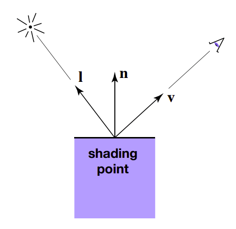
Inputs 输入（均为单位向量）：
- Viewer direction 观察者向量,
- Surface normal 表面法线向量,
- Light direction 光照方向向量, (for each of many lights)
- Surface parameters 表面参数 (color 颜色, shininess 亮度, …)
{kind=link}
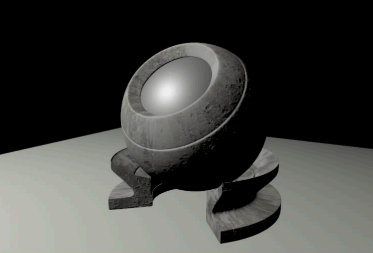
No shadows will be generated! (shading ≠ shadow)
shading 和 shadow 是两码事，这个算法将不会产生任何阴影。
Diffuse Reflection
{kind=link}
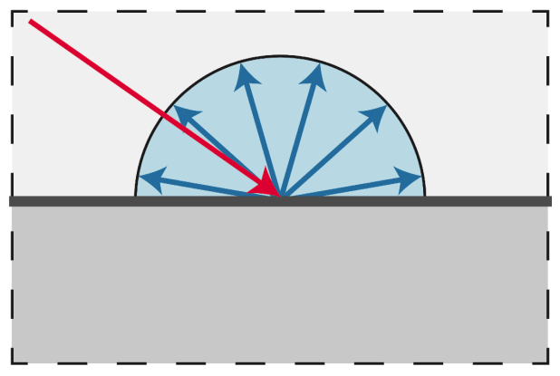
-
Light is scattered uniformly in all directions
光在各个方向均匀地散射
-
Surface color is the same for all viewing directions
对于所有观察方向，表面颜色是相同的
-
{kind=link}
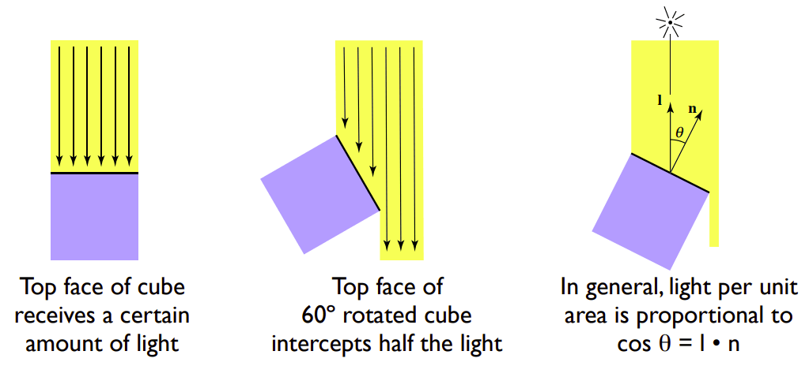
-
But how much light (energy) is received?
但是接收了多少光（能量）呢?
-
Lambert’s cosine law
兰伯特余弦定律
-
单位面积的表面接收到的光的能量与表面法线方向 与光的入射方向 的夹角 有关。夹角越小，接受的光的能量越多，因此 。
Light Falloff
{kind=link}
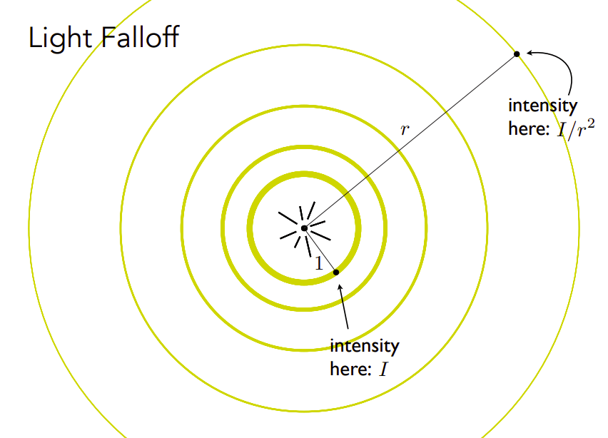
对于点光源，某个点接收到的光的强度与这个点到点光源的位置有关。
假设点光源的能量为 ，且在传播中没有能量损失。
那么如图所示，每个圈的能量综合为 ，那么这个点接收到的光的强度与这个点到点光源的距离 的平方成反比，为 。
Lambertian (Diffuse) Shading
{kind=link}
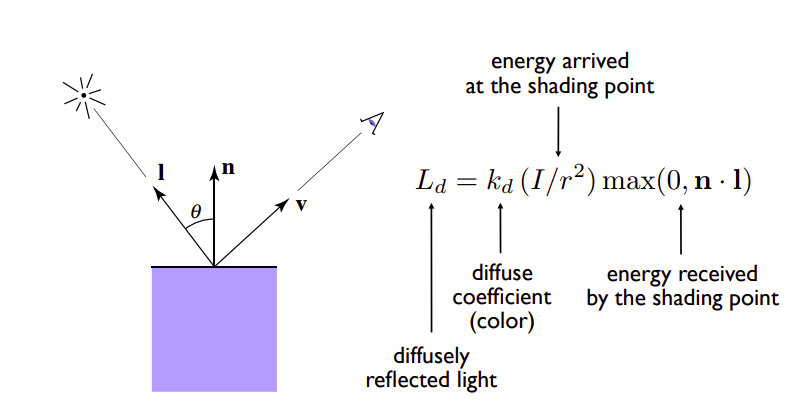
综上所述，我们得到了兰伯特漫反射光照模型：
-
：diffusely reflected light
漫反射光
-
：diffuse coefficient (color)
漫射系数（颜色）
-
：energy received by the shading point
shading point 接收到的光的能量， 是为了防止光线从平面下方照射过来的情况
Shading independent of view direction
与 和 之间的夹角无关，因此我们说 shading 独立于视图方向
Produces diffuse appearance
{kind=link}
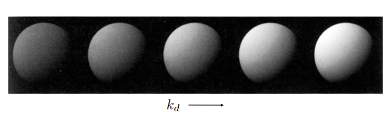
最后的渲染结果， 越强，物体越亮。
Lecture 8: Shading 2 (Shading, Pipeline and Texture Mapping)
-
Shading 2
-
Blinn-Phong reflectance model
-
Specular and ambient terms
环境光和镜面反射
-
-
Shading frequencies
着色频率
-
Graphics pipeline
图形管线
-
Texture mapping
纹理映射
-
Barycentric coordinates
重心坐标
-
Blinn-Phong reflectance model
Specular Term (Blinn-Phong)
镜面反射
{kind=link}
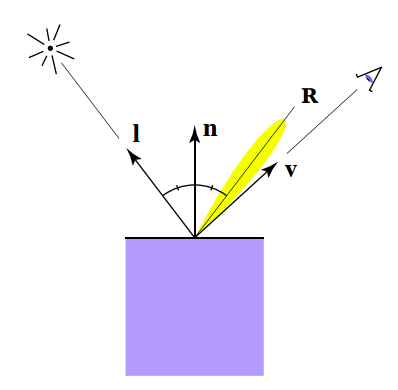
Intensity depends on view direction
镜面反射的强度取决于观察者的方向
-
Bright near mirror reflection direction
在镜面反射中，光线反射的方向 与观察者的视线 非常接近，因此产生了明亮的反射效果
close to mirror direction half vector near normal
在 Blinn-Phong 镜面反射模型中，
将观察角度 与镜面反射角度之间的夹角的计算
转换为
光线入射角度 与观察角度 的半程向量（角平分线方向） 与法线方向 的夹角。
-
Measure "near" by dot product of unit vectors
用单位向量的点积来度量“近”
{kind=link}
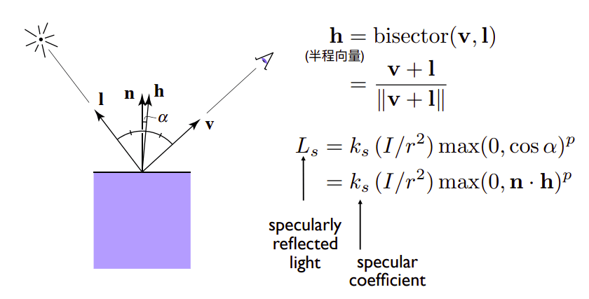
因此高光（镜面反射光的计算公式）：
其中 为镜面反射系数。
{kind=link}
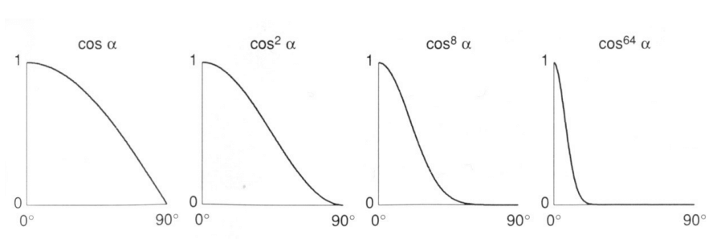
为什么 后要加 次方？这是为了调整高光面积。
{kind=link}
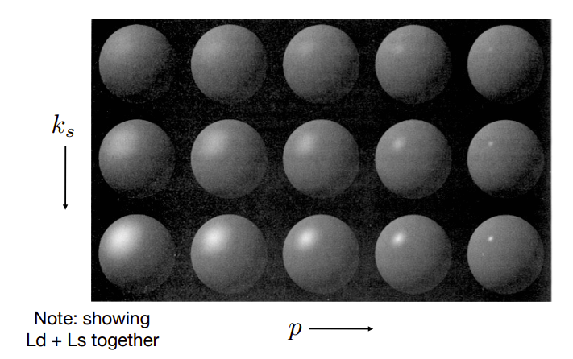
值越大，光斑越小。
Ambient Term
环境光照
Shading that does not depend on anything 不依赖任何东西的 Shading
-
Add constant color to account for disregarded illumination and fill in black shadows
添加恒定的颜色，以说明忽略照明和填充黑色阴影
-
This is approximate / fake!
这是近似的/假的！
{kind=link}
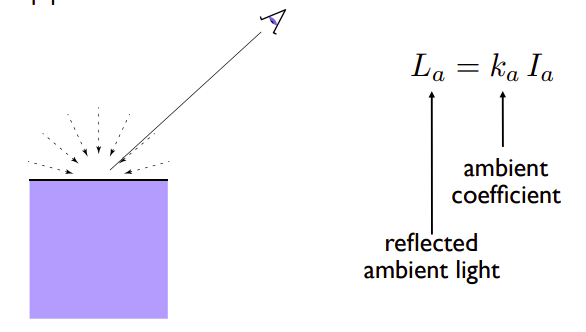
环境光强度=环境系数 * 环境光强度
Blinn-Phong Reflection Model
{kind=link}
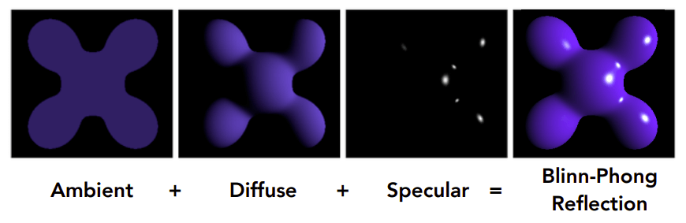
综上所述，我们得到了一个完整的 Blinn-Phong 反射模型：
Blinn-Phong 反射 = Ambient 环境光照 + Diffuse 漫反射 + Specular 高光
Shading frequencies
Shading Frequencies
渲染频率
What caused the shading difference?
{kind=link}
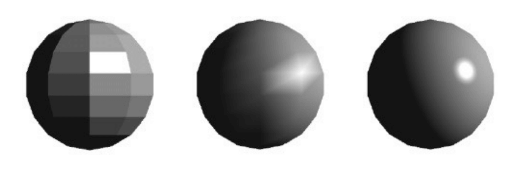
不同的渲染频率得到不同的渲染效果。
Shade each triangle (flat shading)
{kind=link}
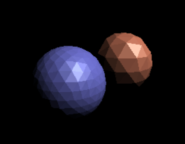
Flat shading
-
Triangle face is flat——one normal vector
对于一个模型来说，每个三角形具有一个法线向量，因此每个三角形看上去都是平的。
-
Not good for smooth surfaces
对平滑物体效果不好。
Shade each vertex (Gouraud shading)
{kind=link}
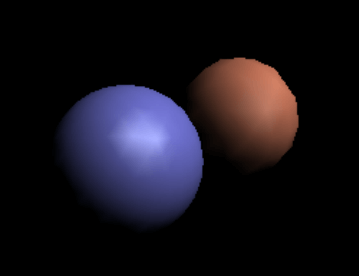
Gouraud shading
-
Interpolate colors from vertices across triangle
每个顶点都有一个颜色，平面的颜色由各个顶点之间的颜色插值得到。
-
Each vertex has a normal vector (how?)
每个顶点具有一个法线向量。
Shade each pixel (Phong shading)
{kind=link}
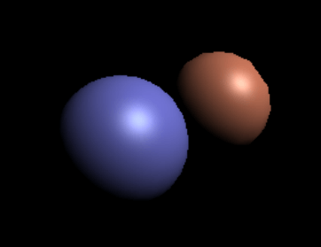
Phong shading
-
Interpolate normal vectors across each triangle
法线向量会在三角形的表面上进行插值，以获得每个像素处的法线向量。
-
Compute full shading model at each pixel
对于每个像素，利用插值得到的法线向量和光照模型。
-
Not the Blinn-Phong Reflectance Model
跟 Blinn-Phong 反射模型是一个人提出来的，但是这两个东西是两码事。
Shading Frequency: Face, Vertex or Pixel
{kind=link}
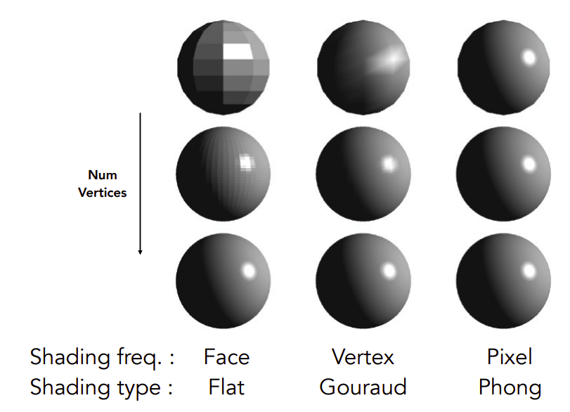
如果模型的面数足够多，那么 Flat Shading 和 Gouraud Shading 也可以得到类似 Phong Shading 的效果。
Defining Per-Vertex Normal Vectors
如何得到顶点法线？
Best to get vertex normals from the underlying geometry
最好的得到顶点法线向量的方法是从基础几何图形（矢量图形？）处得到。
{kind=link}
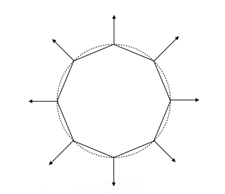
-
e.g. consider a sphere
如上图所示，如果计算机知道这是一个球，那么就很好知道顶点法线向量。
Otherwise have to infer vertex normals from triangle faces
但是一般情况下计算机并不知道，只能从三角形面推断顶点法线向量。
{kind=link}
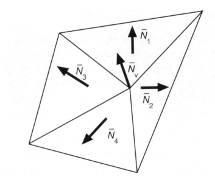
-
Simple scheme: average surrounding face normals
简单方案：取周围面法线的平均值
Barycentric interpolation (introducing soon) of vertex normals
顶点法线的重心插值（下节课再说）
{kind=link}
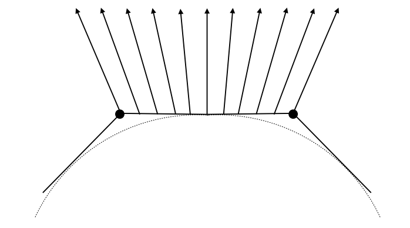
Don't forget to normalize the interpolated directions
不要忘记对插值方向进行规范化
Graphics pipeline
Graphics (Real-time Rendering) Pipeline
现在我们再来回顾一下实时场景渲染的管线。
{kind=link}
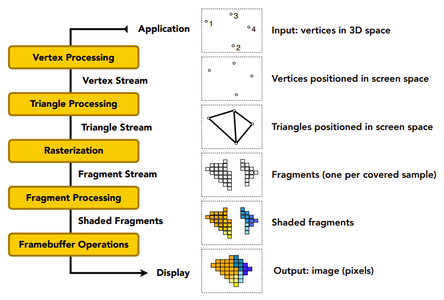
渲染管线流程
-
Vertex Processing
处理顶点
-
Triangle Processing
处理三角形面
-
Rasterization
光栅化
-
Fragment Processing
处理片元（这个 Fragment 可以视为未经过抗锯齿等后处理的像素）
-
Framebuffer Operations
帧缓冲操作
{kind=link}
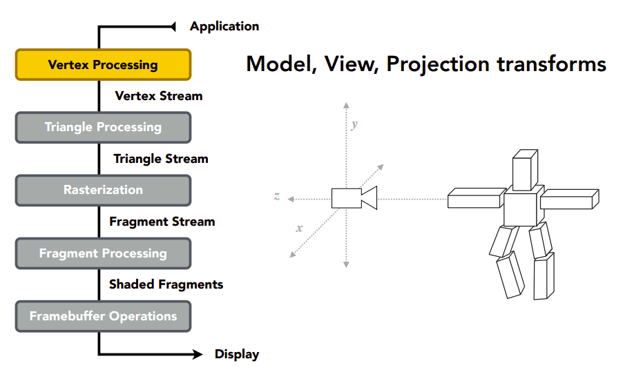
Model, View, Projection transforms 属于 Vertex Processing，放置场景，得到 vertices in 3D space。
{kind=link}
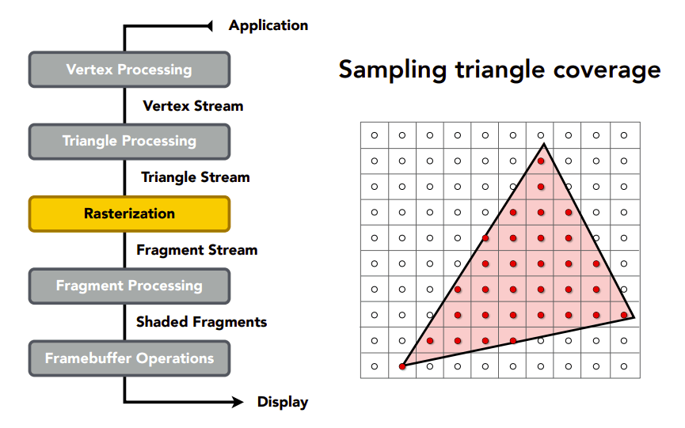
Sampling triangle coverage 属于 Rasterization，将三维场景的顶点映射到二维屏幕上，得到 fragments。
{kind=link}
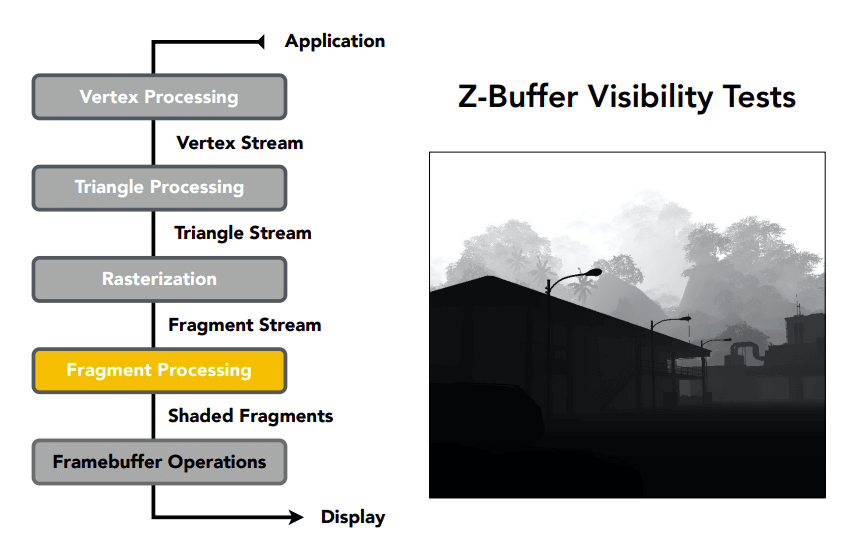
Z-Buffer Visibility Tests 属于 Fragment Processing，是计算最终 Fragment 颜色的一部分。
{kind=link}
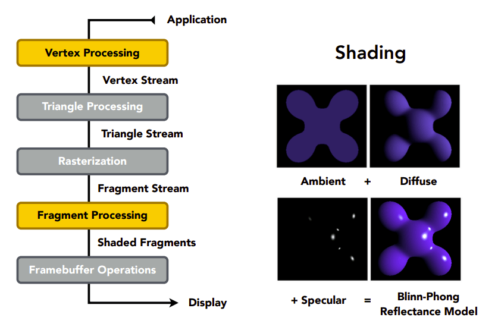
Shading 既可属于 Vertex Processing，也可属于 Fragment Processing。
Shader 中就分为顶点着色器 Vertex Shader 和片元着色器 Fragment Shader，应该就是这回事。
{kind=link}
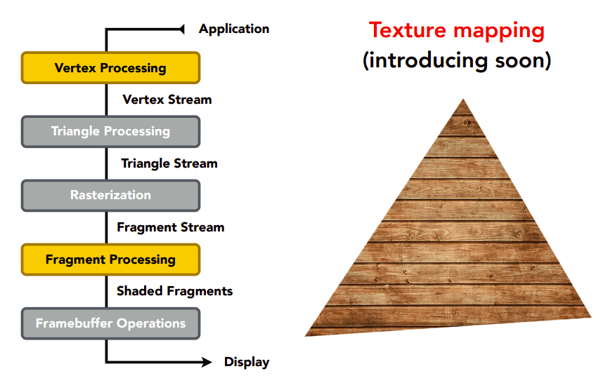
Texture mapping 既可属于 Vertex Processing，也可属于 Fragment Processing。给模型贴图。
Shader Programs
着色器程序
-
Program vertex and fragment processing stages
既可属于 Vertex Processing，也可属于 Fragment Processing
-
Describe operation on a single vertex (or fragment)
描述某个顶点或片元颜色的操作
uniform sampler2D myTexture; // program parameter 程序参数
uniform vec3 lightDir; // program parameter 程序参数
varying vec2 uv; // per fragment value (interp. by rasterizer) 每个片元特有的值
varying vec3 norm; // per fragment value (interp. by rasterizer) 每个片元特有的值
void diffuseShader()
{
vec3 kd; // 漫反射系数（颜色）
kd = texture2d(myTexture, uv); // material color from texture 从 UV 贴图中获取材质颜色
kd *= clamp(dot(–lightDir, norm), 0.0, 1.0); // Lambertian shading model，应用兰伯特漫反射光照模型，将 kd 乘以后面这东西得到 Ld（漫反射光）
gl_FragColor = vec4(kd, 1.0); // output fragment color 输出片元颜色
}Shader function executes once per fragment.
Shader 函数对每个片元执行一次（因此不用像 C 语言那样遍历所有顶点，它自动帮你遍历好了）。
-
Outputs color of surface at the current fragment's screen sample position.
输出当前片段屏幕样本位置表面的颜色。
-
This shader performs a texture lookup to obtain the surface's material color at this point, then performs a diffuse lighting calculation.
这个着色器执行纹理查找以获得表面的材质颜色，然后执行漫反射照明计算。
Snail (shadertoy.com) 这是一个很牛逼的 shader 渲染实例。
Goal: Highly Complex 3D Scenes in Realtime
目标：高复杂度的实时 3D 场景渲染
-
100' s of thousands to millions of triangles in a scene
场景中有成千上万到数百万个三角形
-
Complex vertex and fragment shader computations
复杂的顶点和片段着色计算
-
High resolution (2-4 megapixel + supersampling)
高分辨率（2-4 百万像素+超采样）
-
30-60 frames per second (even higher for VR)
每秒 30-60 帧(VR 甚至更高)
Graphics Pipeline Implementation: GPUs
图形管道实现：gpu
{kind=link}
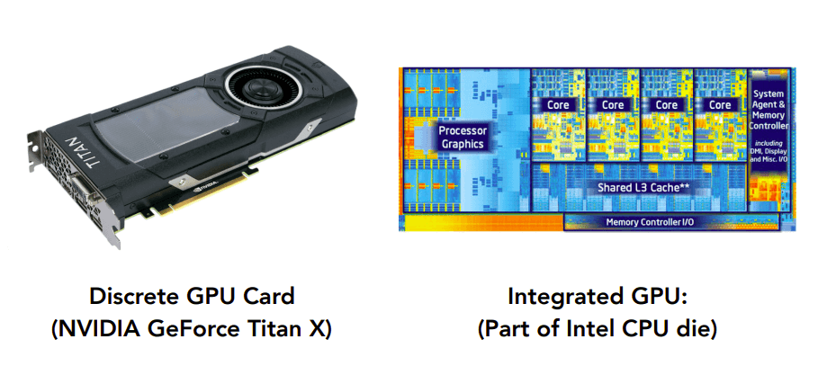
Specialized processors for executing graphics pipeline computations
图形管道流程需要大量并行运算，因此需要 GPU——用于执行图形管道计算的专用处理器。
{kind=link}
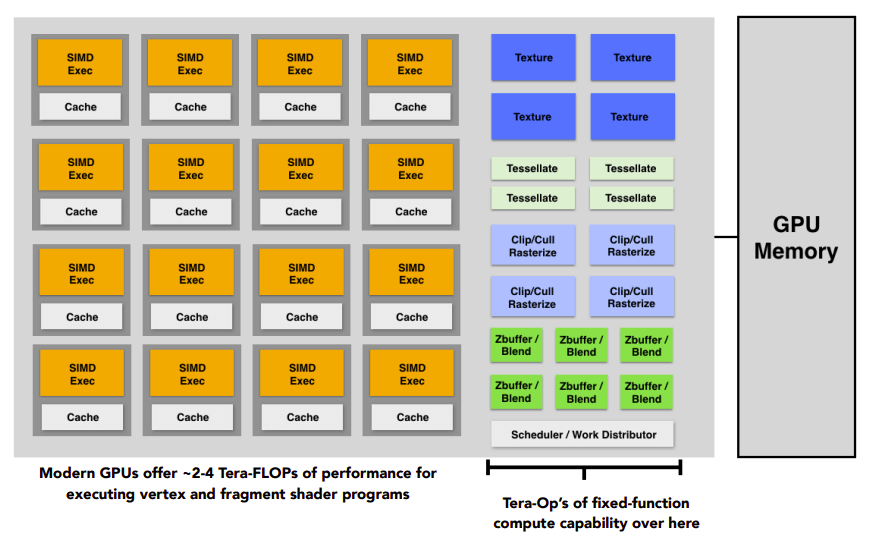
GPU 的结构示意图。
Texture mapping
Texture Mapping
Different Colors at Different Places?
{kind=link}
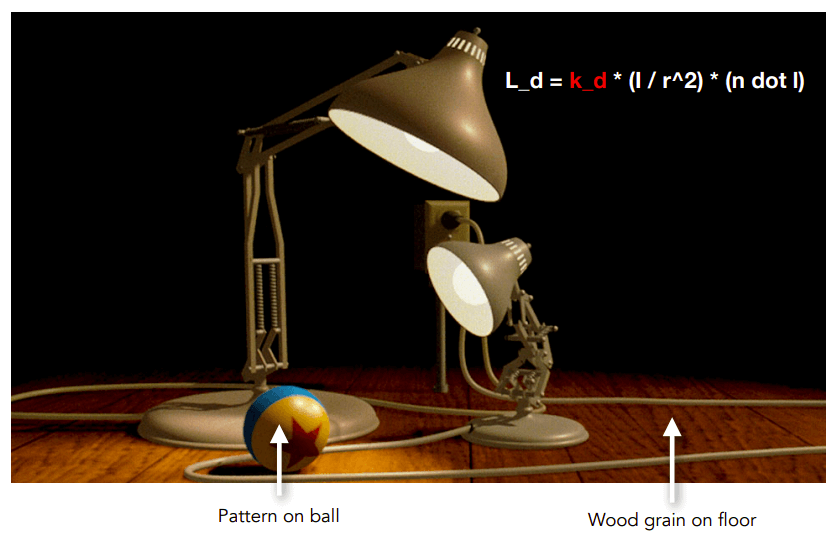
对于兰伯特漫反射光照模型，其中的 是怎么得来的？
Surfaces are 2D
表面都是 2D 的
{kind=link}
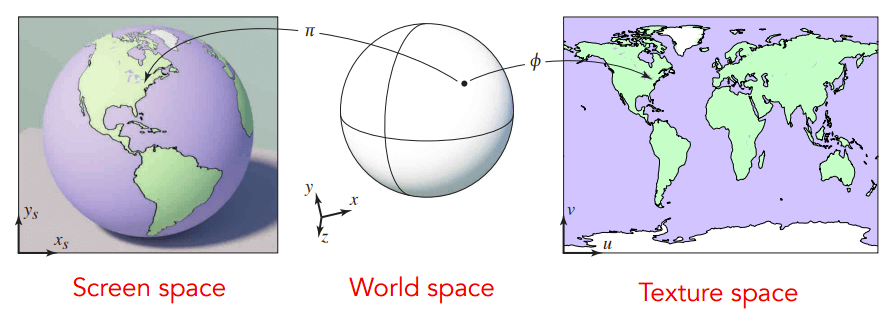
Surface lives in 3D world space
表面在 3D 空间中
Every 3D surface point also has a place where it goes in the 2D image (texture).
每个 3D 表面点在 2D 图像（纹理）中也有一个位置。
Texture Applied to Surface
Texture Applied to Surface
{kind=link}
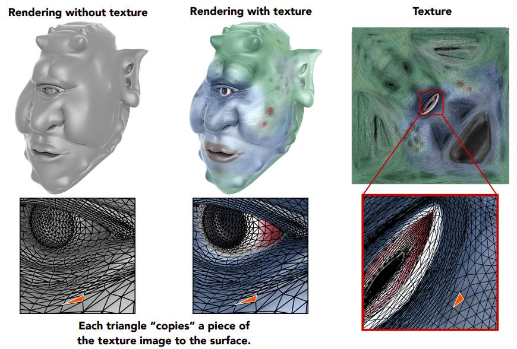
Each triangle "copies" a piece of the texture image to the surface
每个三角形将纹理图像的一部分“复制”到表面
Visualization of Texture Coordinates
{kind=link}
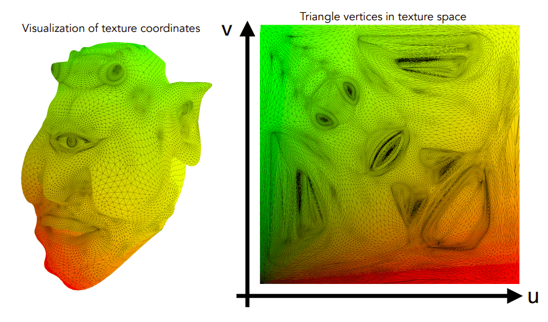
Each triangle vertex is assigned a texture coordinate
每个三角形顶点分配一个纹理坐标
这么表示 UV 贴图的情况，越红 值越高，越绿 值越高。
Texture Applied to Surface
{kind=link}
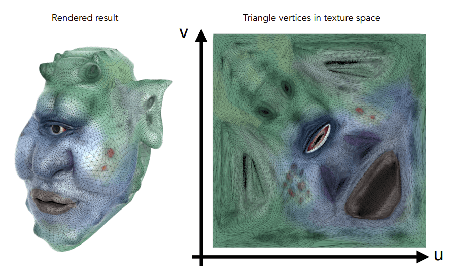
这个 UV 贴图是从美术人员那边获得的，咱们程序员不管这个！
Textures applied to surfaces
{kind=link}
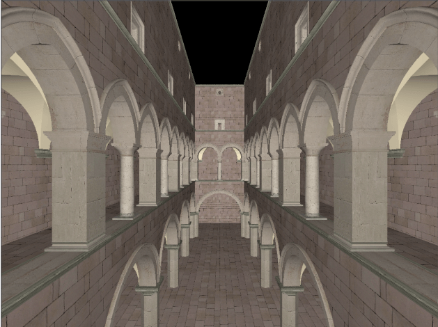
一个贴图示例。
Visualization of texture coordinates
{kind=link}
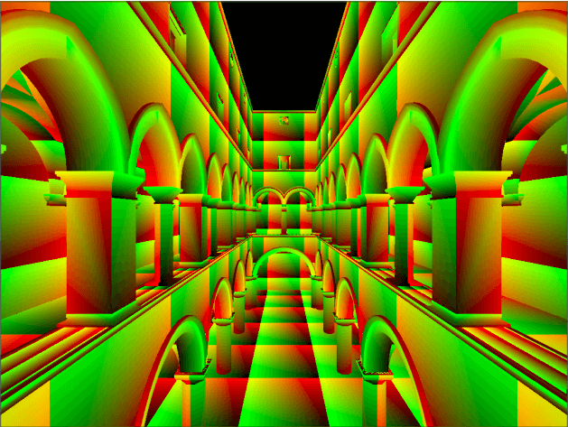
这个模型由若干 UV 贴图平铺而成。
Textures can be used multiple times!
{kind=link}
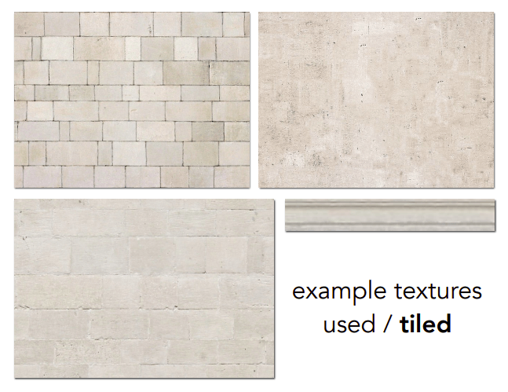
这就需要美工人员整一个无缝贴图了！
Lecture 09 Shading 3 (Texture Mapping Cont.)
-
Shading 3
-
Barycentric coordinates
重心坐标
-
Texture queries
纹理查询
-
Applications of textures
纹理的应用
-
Barycentric coordinates
Interpolation Across Triangles
三角形内插
Why do we want to interpolate?
为什么要进行插值呢？
-
Specify values at vertices
指定顶点的值
-
Obtain smoothly varying values across triangles
获取平滑的三角形变换值
What do we want to interpolate?
我们想要对什么样的值进行插值运算？
-
Texture coordinates, colors, normal vectors, …
纹理坐标，颜色，法向量，…
How do we interpolate?
我们该如何进行插值呢？
-
Barycentric coordinates
重心坐标
Barycentric Coordinates
重心坐标
{kind=link}
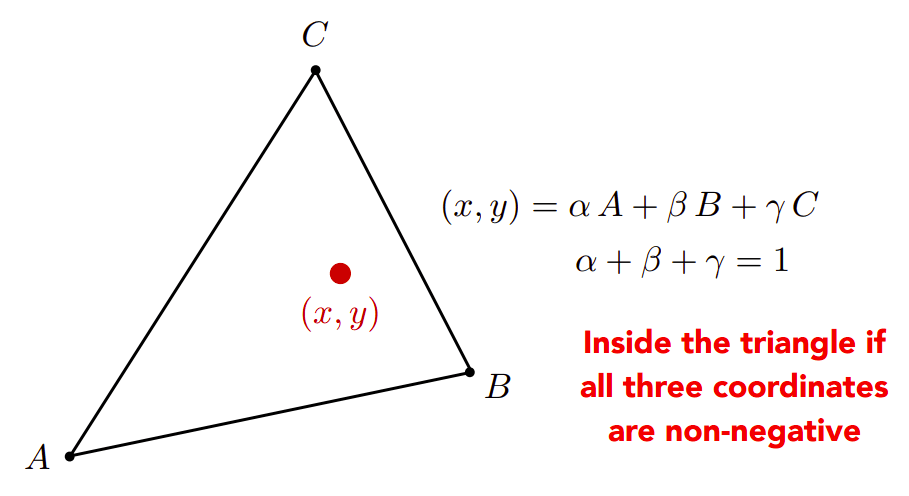
三角形的坐标系统：
三角形 所在平面上的点可用三角形的顶点坐标的线性变换表示：，且
额外的，Inside the triangle if all three coordinates are non-negative，如果这个点在三角形内，则 均非负。
{kind=link}
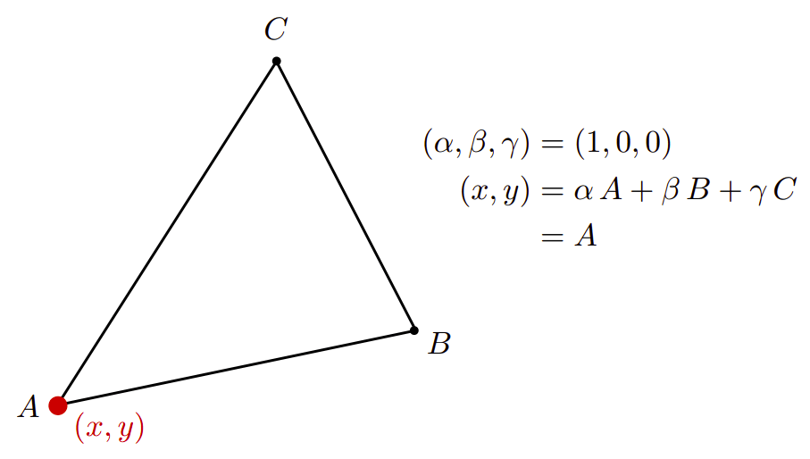
如果这个点恰好是 点，则 。
{kind=link}
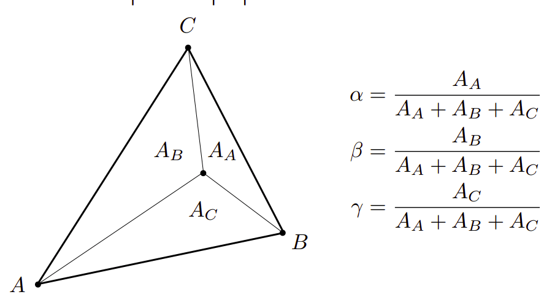
对于三角形内部的点，其重心坐标的 由这个点与三角形顶点的连线再与原三角形所形成的三角形的面积所决定。
{kind=link}
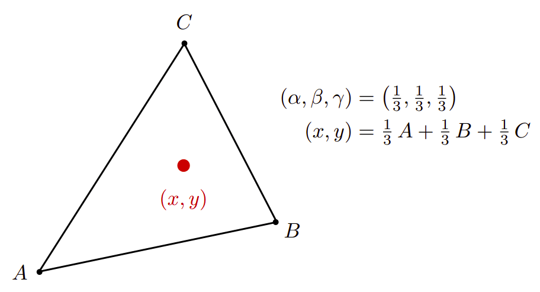
如果这个点刚好是三角形的重心，则它的重心坐标为 。
{kind=link}
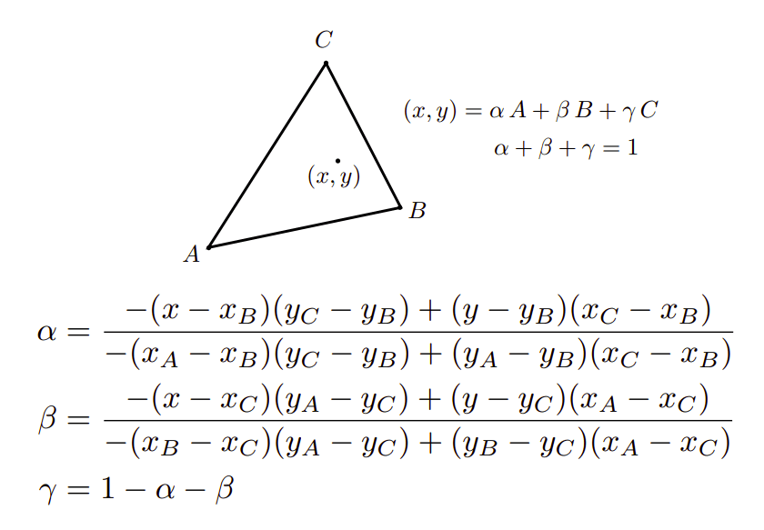
的重心坐标公式：
Using Barycentric Coordinates
使用重心坐标
Linearly interpolate values at vertices
在顶点处线性插值
{kind=link}
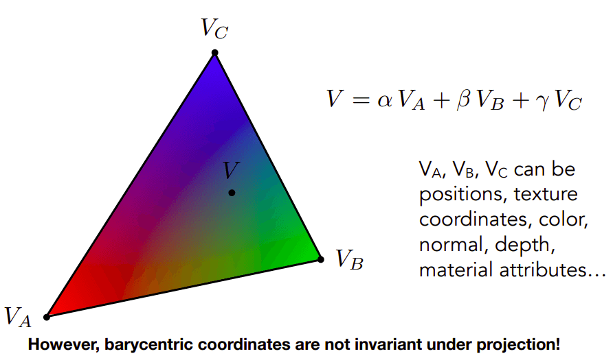
这个用于插值计算的值 可以是位置，纹理坐标，颜色，法线，深度，材料属性等，通过计算获取平滑的三角形变换值。
However, barycentric coordinates are not invariant under projection!
如果三角形作了投影变换，那么重心坐标会改变！所以这个操作应该在投影变换之前。
Texture queries
Simple Texture Mapping: Diffuse Color
简单纹理映射：漫反射颜色
for each rasterized screen sample (x, y): # 对于每个栅格化屏幕样本(x, y)，通常是像素中心
(u, v) = evaluate texture coordinate at (x, y) # 在 (x, y) 计算纹理坐标 (u, v)，Using barycentric coordinates!
texcolor = texture.sample(u, v); # 从 (u, v) 出获取颜色
set sample’s color to texcolor; # 设置样本的颜色为 texcolor，通常是漫射反照率 Kd，（回想一下 Blinn-Phong 反射模型）Texture Magnification - Easy Case
纹理贴图太小了怎么办？
Generally don’t want this — insufficient texture resolution
一般不希望这样-纹理分辨率不足
A pixel on a texture — a texel
我们把纹理贴图上的一个像素称之为 texel（纹理元素、纹素）
{kind=link}
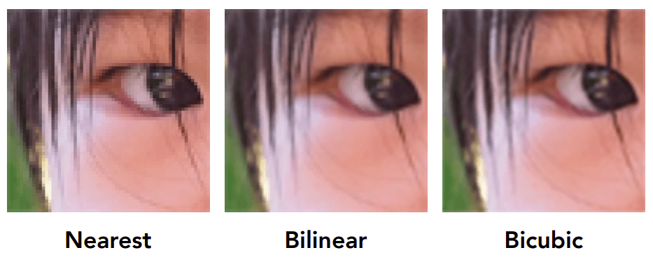
三种处理方法：
Nearest 取最邻近的 texel
Bilinear 双线性插值
Bicubic 双三次插值，一种利用待采样点周围 16 个点的灰度值作三次插值的复杂算法
Bilinear Interpolation
双线性插值
{kind=link}
假设我们想要对红点处 求出其纹理颜色值 。
{kind=link}
考虑红点处周围 4 个点，插值两次，得到 。
{kind=link}
Bilinear interpolation usually gives pretty good results at reasonable costs.
双线性插值通常以合理的成本给出相当好的结果。
Texture Magnification (hard case)
如果纹理贴图太大了怎么办？
{kind=link}
纹理贴图太大导致的后果——近处有 Jaggies 锯齿，远处有 Moire 摩尔纹，远处的频率太高了比采样的频率还高导致的。
Screen Pixel "Footprint" in Texture
纹理中的屏幕像素“足迹”
{kind=link}
{kind=link}
近处的每个像素点包含的纹理贴图部分少，远处的每个像素点包含的纹理贴图部分多。
Will Supersampling Do Antialiasing?
如果使用抗锯齿进行超采样会怎么样？
{kind=link}
好使，但是渲染成本太高！
Antialiasing — Supersampling？
抗锯齿——超采样？
Will supersampling work?
超采样有效吗？
-
Yes, high quality, but costly
是的，高质量，但是成本高
-
When highly minified, many texels in pixel footprint
当高度缩小时，在像素足迹中有许多纹理
-
Signal frequency too large in a pixel
一个像素的信号频率太大
-
Need even higher sampling frequency
需要更高的采样频率
Let' s understand this problem in another way
让我们用另一种方式来理解这个问题
-
What if we don't sample?
如果我们不采样怎么办?
-
Just need to get the average value within a range!
只需要得到一个范围内的平均值！
Mipmap
Allowing (fast, approx., square) range queries
允许（快速，近似，正方形）的纹理查询
{kind=link}
"Mip" comes from the Latin "multum in parvo", meaning a multitude in a small space
“Mip”来自拉丁语“multum in parvo”，意思是一个小空间里的许多人
多耗费 的存储空间存储 Mipmap。
{kind=link}
多层 的 Mip 金字塔。
Computing Mipmap Level D
{kind=link}
Estimate texture footprint using texture coordinates of neighboring screen samples
使用相邻屏幕采样点的纹理坐标来估算纹理印记。
{kind=link}
所使用的 Mipmap 的 level 由像素的纹理坐标与周边像素的纹理坐标之间的距离决定。
Visualization of Mipmap Level
Mipmap 等级可视化
{kind=link}
看上去一格一格的。
Trilinear Interpolation
三线性插值
{kind=link}
因此要对 和 之间再做一个线性插值。
Visualization of Mipmap Level
Mipmap 等级可视化
{kind=link}
插值后的 Mipmap level 看起来好极了！
Mipmap Limitations
Mipmap 的局限性
{kind=link}
直接使用 Point sampling，不进行插值处理，远处会破。
{kind=link}
我们假设拉满的（512x）的抗锯齿是正确答案。
{kind=link}
插值完，由于 Mipmap 都是方形的，远处 Overblur 过于模糊。
在标准的纹理映射中，每个像素都会在纹理上取样一个固定的方形区域，这可能导致在某些情况下出现失真或模糊。
Anisotropic Filtering
各向异性过滤
{kind=link}
效果比 Mipmap 好使！
{kind=link}
各向异性过滤，一种新的纹理映射算法。
通过使用各向异性过滤（Anisotropic Filtering），可以根据像素与纹理之间的角度来动态调整采样区域的形状，以更好地适应纹理的拉伸和变形。这意味着在沿着纹理的方向上，采样区域可以被拉伸，而在垂直于纹理的方向上则可以被压缩，从而提供更准确的采样。
{kind=link}
Ripmaps and summed area tables
- Can look up axis-aligned rectangular zones
- Diagonal footprints still a problem
Ripmaps 和 Summed Area Tables（SATs）都是用于纹理映射的技术，旨在提高在不同分辨率下的纹理采样质量。
- Ripmaps:
- Ripmaps 是一种用于在不同层次上存储纹理数据的结构。它将纹理分割成多个层次，每个层次的分辨率是前一个层次的一半。这种层次结构允许在不同分辨率下进行更有效的纹理采样。通过逐级插值，可以在不同分辨率的纹理之间平滑过渡，从而避免了突然的变化或失真。
- Summed Area Tables (SATs):
- Summed Area Tables 是一种用于快速计算图像区域内像素之和的数据结构。它通过在每个像素位置存储从左上角到该位置的所有像素之和来实现。这使得可以通过查询四个角的和并进行相减来快速计算出任意矩形区域内像素的总和。SATs 在纹理映射中通常用于快速计算矩形区域内的纹理印记，以便更有效地进行纹理采样。
EWA filtering
EWA（Elliptical Weighted Average）滤波是一种用于纹理映射的高级采样技术，旨在提供更准确和更高质量的纹理采样结果。
EWA 滤波通过考虑采样点周围的纹理像素，并根据它们与采样点之间的距离和方向来加权平均这些像素的值。与传统的线性或双线性插值相比，EWA 滤波考虑了更多的信息，因此在处理各种纹理形状和方向时能够产生更好的结果。
主要特点包括：
- 椭圆权重：EWA 滤波使用椭圆形的加权函数来确定每个纹理像素对最终采样值的影响程度。这种权重考虑了采样点与纹理像素之间的距离和方向，使得在各向异性纹理和非均匀采样情况下能够产生更准确的结果。
- 自适应核大小：EWA 滤波通过自适应地调整椭圆核的大小和形状来适应不同的采样情况。这意味着它可以在不同分辨率和形状的纹理上产生更一致和更准确的采样结果。
- 抗锯齿和抗混叠：由于 EWA 滤波考虑了周围像素的权重和方向，因此它在处理锯齿状边缘和纹理混叠时能够产生更平滑和更真实的效果。
-
Use multiple lookups
使用多个查找
-
Weighted average
加权平均数
-
Mipmap hierarchy still helps
Mipmap 层次结构仍然有帮助
-
Can handle irregular footprints
可以处理不规则的足迹
{kind=link}
效果越好，代价是性能越差。